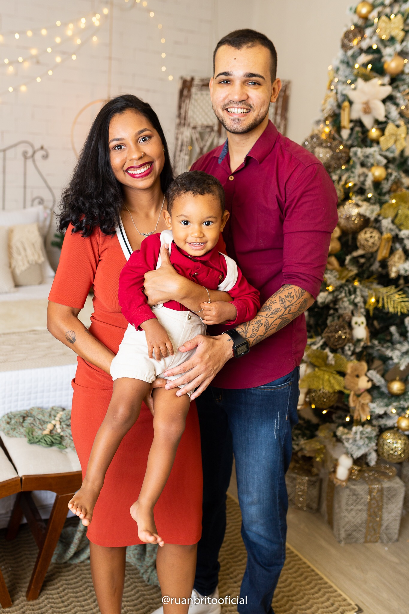

Sobre
Minhas principais habilidades no desenvolvimento FrontEnd são: HTML, CSS, JavaScript, ReactJS, React Native, Angular, Storybook, Styled Components e Integrações e Comunicação com o BackEnd.
Veja meus Projetos
Minhas principais habilidades no desenvolvimento FrontEnd são: HTML, CSS, JavaScript, ReactJS, React Native, Angular, Storybook, Styled Components e Integrações e Comunicação com o BackEnd.
Veja meus Projetos

Me chamo Felipe, mas pode me chamar de Lipe. Sou baiano, nascido em Nazaré, município do interior da Bahia, já fui Contador, Coordenador financeiro, Gerente Administrativo. Tenho formação acadêmica em Ciências Contábeis, mas especialização na área de TI (Desenvolvimento de Softwares), costumo ser constante e criativo no que costumo fazer. Meus principais hobbies são: Desenhar, Assistir Filmes e Series, Jogar, Correr e Desenvolver Design. Sou pai do Théo e marido da Natália. Tenho uma cachorrinha chamada Sol. Minha família é minha principal motivação e inspiração, eles são minha base.